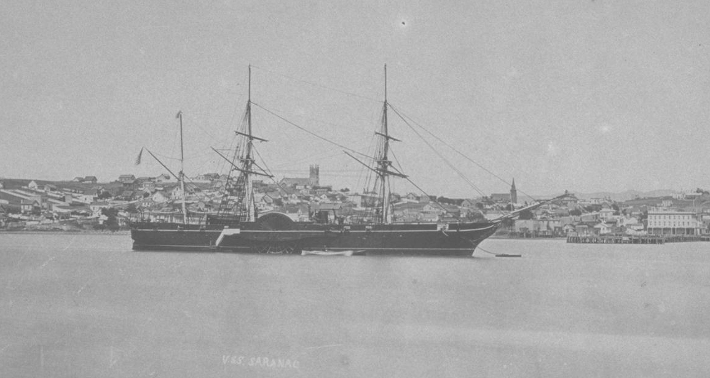
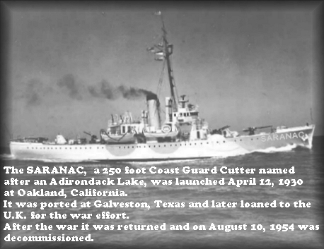
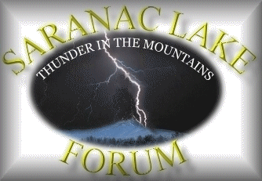
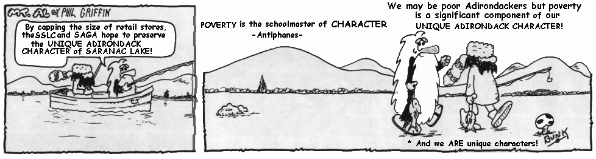
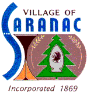
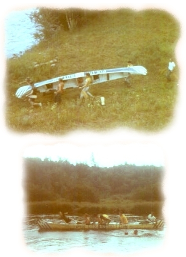

The old-time war canoe races, which were a popular feature in past Willard Hanmer Guideboat and Canoe Races, are a good example. In these races each bar in town (32 to be exact) participated in sponsoring a team consisting of eight of it's most athletic clients.
Strength was a big factor in this selection, as the transporting of beer coolers on the carry was of utmost importance. Each competitor was allowed only one cooler of beer.
The races were conducted with a certain "enivre risquer noyer". (Translated from the French: enivre, meaning "drunk" and risquer noyer, meaning "to risk drowning".)
I was discussing this subject with an old friend, Sandy Richardson, over strawberry shortcake and Coke at the canoe races last July. In earlier years we would have been on our third case of Bud but the old beer truck had long ago given in to the socially correct era of non-alcoholic beverages. (Incidentally, on that day Sandy took first prize in the one man event for his age group, sixty something.)
We were lamenting about the way the event had slowly transformed into a "Norman Rockwell" type of affair, as we downed our Coke and shortcake. One race in particular came to mind. In 1970 an entry from The Porch Restaurant hit the finish line six hours after the start cannon fired. We couldn't remember who was on the craft or what the delay was. We did recall that it was called the Poetry in Motion and that we were still at the Fish and Game club unloading the beer truck, two bottles at a time when they finally crossed the finish line.
Ironically, a week or so after talking to Sandy at the race I was visiting with another old friend, Tom Hennessy, and discovered that he was one of the crew of Poetry In Motion, on that fateful race day in 1970. On the crew that year was, Nick Logie, Bumper Branch, Eldred Gauthier, Johnny Garwood, Tom Hennessy, Terry Bailey, Bump Lyons and Loren Vaughn. Tom explained that the delay was caused by two unscheduled stops. The first stop was brought about by a realization that they didn't have the required allotment of beer aboard. By this time they were at the carry and, being close to the Waterhole, they sent the cabin boy, Eldred Gauthier, to fetch more rations. Eldred didn't return promptly, so First Mate Brian Patnode, went to retrieve him.
Bumper Branch was later sent to bring back the two deserters. Eventually the whole remaining crew went to carry back the three missing men. As they finally made their way down the river they realized that the beer was warm so they disembarked once more at the Pine Street overpass and walked a short distance to The Belvedere for some colder beer. One thing led to another and they forgot about the race until Johnny Garwood, owner of the Porch Restaurant and sponsor of the crew, who the team had invertently forgotten back at the Waterhole, saw the craft at the Pine Street bridge and followed the trail of empties to the Belvedere. A pep-talk ensued and soon the crew was on it's way to the Fish and Game Club, six hours late. Strangely enough, they took first place, beating Jim Miller's "Safari Racing Team" by 45 seconds. Jim's team had also stopped at the Belvedere, but stayed longer.
Tom Hennessy furnished me with the faded 30 something year old photos on the top of the page.
"Lying diagonally across the rough wooden floor is an enormous wood-and-canvas canoe, almost thirty feet long. There are several holes in it's hull, and patches of rot, but it is cheerfully colored. Someone long ago had painted bright blue and yellow stripes diagonally along both bow and stern. In foot high letters just beneath the gunnels amidships they painted the name; Poetry In Motion. And in smaller letters, running along the entire length of the boat, are the hand painted names of children long grown up who presumably once paddled the great canoe around Osgood Pond or some other Adirondack lake. Don, John, Tom, Brian, Loren, Bumper, Eldred.
There is a curious forlorn quality to the Poetry In Motion that will most likely survive the growth of a tourist destination around it. It is not a eerie thing, though, like the black log buildings of Santanoni. There, if you peer into the main lodge, the only surviving bits of the old days are a ghostly white stuffed beaver keeping company on the mantel with a nearly featherless stuffed egret.
The Poetry In Motion is just somebody's old friend, left behind to decompose while far across Osgood Pond, in front of another camp barely discernable through the trees, paddles still flash on certain summer afternoons."
(I stopped out to see the famous canoe that month but was informed that it had made a last voyage to the Lake Clear dump only days before.)
Ah, if you only knew the true history of that canoe, Paul. It would have made a much more interesting story.